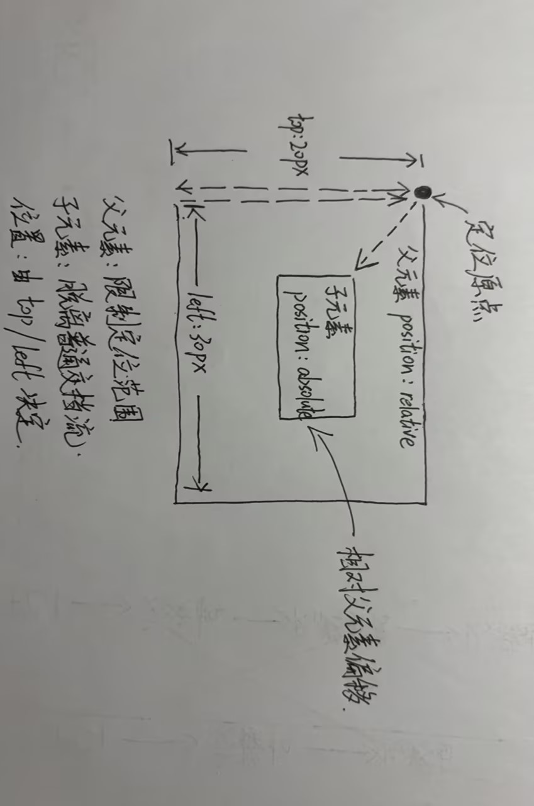

第一部分 · 看代码找错（20分）
三处 bug 与现象对照
| # | 错误位置 | 错误原因 | 对应现象 |
|---|---|---|---|
| 1 | .box li 缺少 position:relative 和 overflow:hidden | 图片放大后没有裁切约束，溢出部分直接显示在卡片外 | 图片放大跑出卡片，盖住旁边卡片 |
| 2 | transition: all .6s 写在了 :hover 里 | 过渡只存在于悬浮状态，移出后规则失效，样式瞬间跳回 | 文字展开只有移入有动画，移出无过渡 |
| 3 | .txt 用了 position:absolute，但父级 li 没有 position:relative | “子绝父相”缺了“父相”，文字条以更外层元素为定位基准 | 卡片布局排版错乱 |
修改后的完整代码
<style>
.box li{
width: 300px;
position: relative; /* 修复bug3：父相，给绝对定位的文字条做参照 */
overflow: hidden; /* 修复bug1：裁切溢出，图片放大不会跑出卡片 */
list-style: none;
}
.box img{
width: 100%;
transition: all .6s; /* 修复bug2：transition移到默认状态，移入移出都有动画 */
}
.box li:hover img{
transform: scale(1.2); /* hover里只写transform */
}
.txt{
position: absolute;
left: 0; /* 补充：贴住卡片左侧 */
bottom: 0;
width: 100%; /* 补充：宽度撑满卡片，否则文字条宽度塌陷 */
height: 40px;
background: rgba(0,0,0,.6);
transition: all .6s; /* 文字条同样在默认状态写transition */
}
.box li:hover .txt{ /* 补充：悬浮时文字条展开的触发规则 */
height: 110px;
}
.box{
display: flex;
}
</style>
第二部分 · 补全代码（40分）
2.1 语义标签填空
| 页面区域 | 应填语义标签 |
|---|---|
| 页面顶部头部区域 | <header> |
| 导航条 | <nav> |
| 页面唯一主要内容区 | <main> |
| 侧边栏附属内容 | <aside> |
| 页面底部版权页脚 | <footer> |
2.2 卡片动画补全
| 需要实现效果 / 问题 | 答案 |
|---|---|
| 防止放大图片溢出 li 容器 | li 添加属性：overflow: hidden; |
| 子绝父相，让文字条定位在卡片底部 | li 添加属性：position: relative;（文字条写 position: absolute） |
| hover 图片从原始大小放大到 scale(1.2)，需要写哪两个选择器 | .box img{ transition: all .6s; } 与 .box li:hover img{ transform: scale(1.2); } |
| 文字高度平滑展开，移入移出都有动画，transition 写在默认还是 hover？为什么？ | 写在默认（普通选择器）上。因为移出鼠标后 :hover 规则立即失效，浏览器按默认状态的 transition 计算回退动画；若只写在 hover 上，移出瞬间没有过渡定义，元素会直接跳变回原样。 |
| 奇数卡片悬浮，文字铺满整张卡片，使用什么伪类选择器 | :nth-child(odd)（即 .box li:nth-child(odd):hover .txt{ height: 100%; }） |
作业效果演示 · 六张图文卡片
下方六张卡片即作业 2.2 要求实现的效果：上图下文，悬浮时图片放大、文字条平滑展开，奇数卡片文字铺满整张卡片。
-

卡片一
悬浮时文字条铺满整张卡片，图片同时放大 1.2 倍。
-

卡片二
悬浮时文字条向上展开到 110px。
-

卡片三
nth-child(odd) 选中奇数卡片。
-

卡片四
transition 写在默认状态，移入移出都有动画。
-

卡片五
overflow:hidden 裁切放大的图片。
-

卡片六
子绝父相：li 相对定位，文字条绝对定位。
2.3 flex 两栏布局填空
版心 1200px；主内容 792px，侧边栏 400px；两栏间隔 8px。
- 父容器开启 flex：display: flex;
- 设置两栏间隙 8px 的属性：gap: 8px;（禁止 margin，gap 不会产生多余的边距叠加问题）
.container{
max-width: 1200px; /* 版心 */
margin: 0 auto; /* 版心水平居中 */
display: flex; /* 开启 flex 布局 */
gap: 8px; /* 两栏间隔 8px */
}
.content{ width: 792px; } /* 主内容 792px，792+8+400=1200 */
第三部分 · 手写原理简答（25分）
1. 画图：父相子绝的盒子位置关系

2. overflow:hidden 本节课两个作用
- 作用1：溢出裁切。把超出容器边界的内容裁掉——图片 scale(1.2) 放大后超出卡片的部分被裁切，不会盖住旁边的卡片。
- 作用2：隐藏容器内超出的部分，实现“先藏后展”的动画。文字条默认高度只有 40px，超出的描述文字被 overflow:hidden 隐藏，悬浮时高度变大，文字随高度变化逐渐“露出来”，形成平滑展开效果。（补充：它还能触发 BFC，用来清除浮动。）
3. transform:scale(1.2) 会不会把盒子实际占位变大，挤压旁边卡片？
不会。transform 是视觉层面的变换（类似“photoshop 缩放”），不改变盒子在文档流中的布局：盒子原本占的位置、宽高完全不变，旁边的卡片不会被挤压，页面也不会重排。所以放大的图片会溢出到原来的占位之外，这才需要配合 overflow: hidden 把溢出部分裁掉。
4. transition 写在 hover 上和写在普通选择器上，鼠标移出动画的区别
| 写法 | 移入时 | 移出时 |
|---|---|---|
| 写在 :hover 上 | 有过渡动画 | 无动画，瞬间跳回（hover 规则失效，默认状态没有 transition） |
| 写在普通选择器（默认状态）上 | 有过渡动画 | 也有过渡动画（默认状态始终带着 transition，回退过程同样被过渡） |
结论：谁发生变化的两个状态都要有 transition，所以写在默认（普通）选择器上，移入移出才都有动画。
5. bug 记录（现象 → 排查 → 修复）
现象：导航栏 a 标签 hover 悬浮不变色，其余 hover 样式正常。
排查：打开开发者工具，发现别的选择器优先级更高覆盖了 hover。
修复：提高 hover 选择器优先级，删掉冲突样式后悬浮变色恢复正常。
第四部分 · 扩展挑战（选做，15分加分）
左下角的圆形按钮就是本挑战的实现（纯 CSS，无任何 JS）：点击可回到本页顶部。
/* 回到顶部按钮：纯 CSS 实现 */
.backtop{
position: fixed; /* 固定定位：相对视口，不随页面滚动 */
left: 20px; /* 视口左下角 */
bottom: 24px;
opacity: 0.5; /* 初始半透明 */
z-index: 999; /* 浮于页面内容之上 */
transition: all .3s;
}
.backtop:hover{
opacity: 1; /* 悬浮完全不透明 */
transform: scale(1.1); /* 同时轻微放大 */
}
结构上用锚点 <a href="#top"> 跳回页面顶部（body 上设置了 id="top"），全程不需要 JavaScript。